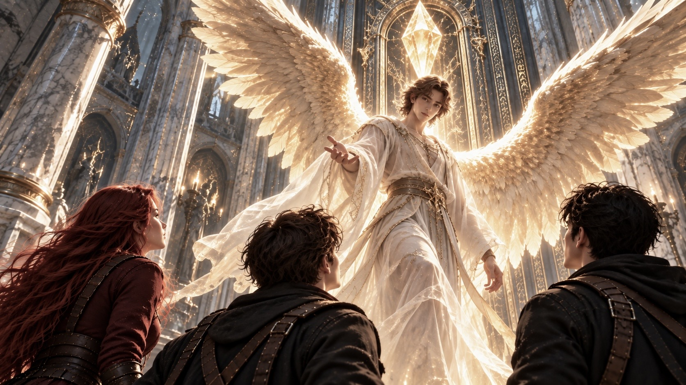
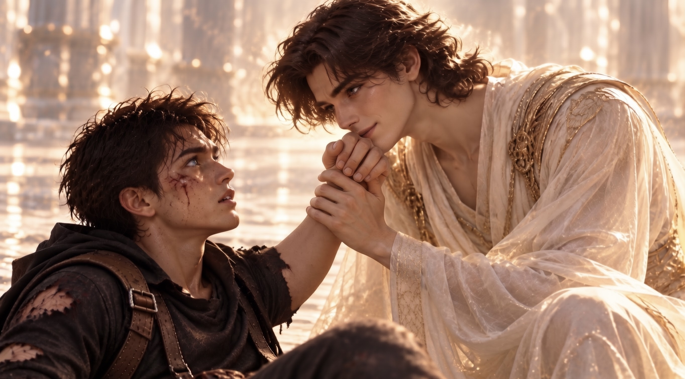

WHITE MAGIC ART STUDIO
第十九章
守門天使
寇德薩拉．主殿門前
「所以，你在克里斯的記憶裡，被小時候的他攻擊了？」
安娜轉頭看向柴克，語氣裡帶著幾分不可思議。
三人離開記憶迴廊後，沿著唯一的長廊繼續前進。
四周重新恢復成寇德薩拉潔白的大理石建築。高聳的石柱整齊排列，柔和的光線沿著牆面流動，彷彿整座宮殿都沐浴在永不熄滅的晨曦之中。
身後的光門，早已悄然消失。
「對啊。」
柴克點了點頭。
「克里斯說，那是因為他小時候還不太會控制力量。」
「喔——」
安娜刻意拉長尾音。
「原來如此。真是個非常合理的解釋呢。」
她說著，意味深長地瞥了克里斯一眼。
克里斯頭也不回。
「閉嘴。」
安娜忍不住笑了一聲，卻沒有繼續追問。
「反正第二個試煉總算結束了。」
柴克伸了個懶腰。
「再來是什麼？」
克里斯從衣袋裡取出傑西留下的手稿，翻到最後一頁。
「這裡只寫了四個字。」
他停頓片刻。
「『主殿門前』。」
「然後？」
「沒有然後。」
柴克皺起眉頭。
「連提示都沒有？」
「沒有。」
「搞不好只是要我們走到門前？」
克里斯將譯稿收起。
「如果真是這樣，傑西就不會特別提醒我們有三道試煉了。」
柴克想了想，竟找不到反駁的理由。
「……也是。」
前方的長廊逐漸變得寬敞。
原本平整的石壁上，開始出現一道道細密的雕刻。
直到三人轉過最後一根石柱，一面刻滿古老文字的巨大石牆，赫然出現在眼前。
「等等，這些字……」
安娜停下腳步。
「跟火炬之房的一樣。」
克里斯正要回頭，柴克卻已經快步走到石牆前。
他仰起頭，仔細閱讀那些密密麻麻、只有自己能理解的聖語。
安娜望著二哥專注的背影，忽然湊近克里斯。
「欸。」
「幹嘛？」
「你真的不打算告訴Ｚ？」
克里斯瞥了他一眼。
「告訴他什麼？」
「你小時候的事啊。」
安娜壓低聲音。
「『小時候還不太會控制力量』？這個理由也太瞎了吧。」
她停了一下。
「而且，某種程度上，不也是因為他，你才覺醒了元素使的天賦嗎？」
克里斯沉默片刻。
「妳不也一樣？」
「什麼？」
「守護者。」
安娜的表情微微一僵。
克里斯看著她。
「當年妳告訴我，是因為名額滿了，才沒能加入。」
「……」
「還有艾克。」
安娜垂下眼睛。
克里斯的聲音放輕了些。
「妳真正害怕的，恐怕也不是那個女巫吧？」
安娜沒有立即回答。
遠處，柴克仍在石牆前研究文字。
過了好一會兒，她才低聲開口。
「我只是害怕自己錯過了。」
「那個機會……還有他。」
她望向長廊深處。
「那時候我才十三歲。很多事情根本想不清楚，只覺得如果錯過了，就再也不會有第二次。」
克里斯安靜地聽著。
「可是妳還是選擇留下來。」
安娜抬起頭。
「妳很勇敢。」
「拜託。」
安娜有些不自在地笑了。
「這種話留著以後再說吧。」
她望向石牆前的柴克。
「家裡有個雷翼，我們早就沒辦法完全照自己的意思生活了。」
克里斯沒有接話。
安娜看了柴克一會兒，忽然又說：
「不過，就算Ｚ不是雷翼，我今天也會做一樣的選擇。」
克里斯轉頭看向她。
安娜輕輕聳肩。
「因為他是我們的家人啊。」
克里斯的神情漸漸柔和下來。
「媽以前總是說，家人是最重要的。」
他望著妹妹。
「如果她看到現在的我們，應該會很驕傲吧。」
安娜輕輕點頭。
「嗯。」
「我解讀完了！」
柴克忽然轉身。
兩人立刻停止交談。
「上面說，主殿前有一位基路伯天使負責把守。想進入寇德薩拉的內部，就必須通過祂的考驗。」
「精彩！」
克里斯拍了兩下手。
「不愧是我們的翻譯大師。」
柴克得意地揚起下巴。
「還有喔！」
他指向石牆上的另一段文字。
「只有最忠誠、力量最純潔的基路伯，才有資格守護主殿。」
克里斯若有所思。
「所以，『基路伯』應該是某種神聖的身分，而不是特定天使的名字。」
「應該是吧。」
柴克正要繼續研究，安娜卻突然拉住他的衣袖。
「等等。」
她望向長廊盡頭。
「那扇門……剛才就在那裡嗎？」
柴克回過頭。
一座巨大的門扉，正靜靜矗立在前方。
它高得幾乎望不見頂端，銀黑相間的金屬表面布滿古老的聖語紋路。兩扇門緊閉，中央上方鑲嵌著一顆巨大的金色水晶。
水晶散發著規律的光芒。
每一次明暗交替，都伴隨著低沉而悠遠的嗡鳴。
彷彿有什麼古老的存在，正沉睡在門扉之後。
三人不自覺放慢腳步。
越靠近大門，四周便越安靜。
連一向話多的柴克，也不由得屏住呼吸。
「先把鞋子脫了。」
克里斯忽然低聲提醒。
安娜一愣。
「什麼？」
「這裡是聖域。」
克里斯仰望眼前的大門。
「至少應該保持尊敬。」
三人正準備動作，一道聲音卻從高處傳來。
「毋須如此。」
那聲音溫和而宏亮，在寬闊的空間裡緩緩迴盪。
「你們早已受到拉比聖術的潔淨。能以凡人之身踏入此地，已足以表明你們的資格。」
柴克猛然抬頭。
大門上方，一道人影靜靜佇立在金色光芒之中。
下一瞬間——
一對巨大的金色羽翼，在那道身影背後緩緩展開。

耀眼的光芒灑落，照亮整條長廊。
三兄妹下意識抬手遮住眼睛。
那道身影從高處降下。
羽翼輕輕收攏，雙腳落在光潔的石面上，竟沒有發出半點聲響。
祂身披半透明的長袍，深栗色的捲髮垂在額前。那雙深邃的眼睛平靜地注視著三人，彷彿早已知道他們的到來。
「遠道而來的勇者。」
天使微微頷首。
「我是此地的守門天使——基路伯。」
柴克望著祂，一時忘了回答。
基路伯的目光從三人身上緩緩掠過。
「你們是為了安德烈之劍而來。」
安娜忍不住看向克里斯。
「我們有說嗎？」
「沒有。」
克里斯也壓低聲音。
基路伯微微一笑。
「你們確實尚未開口。」
「但每一位守門的基路伯，都能聆聽造訪者心中的聲音。」
柴克下意識抿緊嘴唇。
基路伯將目光落在他身上。
「你們已經通過前兩道試煉。」
「如今，我將考驗你們是否真正具備三位一體的心志。」
祂停頓片刻。
「最後一道試煉，只能由其中一人接受。」
祂看向柴克。
「安德烈之劍，是初代雷翼的術器。」
「因此，身為當代雷翼繼承者的你，是最合適的人選。」
柴克怔住。
「我？」
克里斯立即上前一步，擋在弟弟身前。
「等一下。」
他皺起眉頭。
「柴克根本還沒學會如何使用聖術，讓他獨自接受試煉，未免太不公平了。」
基路伯搖頭。
「這並非考驗聖術的強弱。」
祂越過克里斯，看向柴克。
「而是他必須親自跨越的門檻。」
「規則很簡單。」
基路伯抬起手，指向自己的臉頰。
「只要他能在戰鬥中揮拳擊中我的臉，便算你們全員通過。」
柴克睜大眼睛。
「……就這樣？」
「就這樣。」
克里斯回頭看向弟弟。
「柴克，你確定可以嗎？」
「我……」
柴克望著眼前的天使。
即使那對金色羽翼已經收起，祂身上仍散發著令人不容小覷的威嚴。
「Ｚ，還是我來吧。」
安娜急忙開口。
「我可以再跟祂談談。」
「不用。」
柴克伸手按住妹妹的肩膀。
他的手有些發抖。
「既然不是比聖術……」
他深吸一口氣。
「那就讓我試試看。」
克里斯皺眉。
「柴克……」
「發生這麼多事，你們一直都在保護我。」
柴克看向哥哥，又看向安娜。
「我知道你們是為了我好。」
他停頓片刻。
「可是這次，至少讓我自己來吧。」
安娜沒有再說話。
克里斯看著弟弟，最終也慢慢退開。
基路伯輕輕點頭。
「既然如此。」
祂的聲音在空間中迴盪。
「最後一道試煉——現在開始。」
「等一下！」
克里斯猛然伸手。
然而下一瞬間，柴克與基路伯的身影，便同時消失在金色光芒之中。
柴克重新睜開眼睛。
四周是一片純白。
沒有牆壁。
沒有天空。
甚至看不見地面的邊界。
腳下明明有著堅實的觸感，視線卻找不到任何能夠辨認方向的事物。
克里斯和安娜都不在。
只有基路伯站在前方。
「規則不變。」
天使將雙手背在身後。
「只要你的拳頭碰到我的臉，你就贏了。」
柴克握緊雙拳。
他在心裡估算距離。
不算遠。
如果能突然加速，也許有機會。
他深吸一口氣。
猛然向前衝去！
右拳筆直揮出。
基路伯微微側身。
拳頭擦著祂的臉頰掠過。
柴克還來不及收回手臂，腹部便受到一記肘擊。
「呃！」
他踉蹌後退，彎下腰，勉強穩住呼吸。
「還沒結束。」
柴克抬起頭。
第二次。
他改從側面接近，先以左手佯攻，再迅速揮出右拳。
然而基路伯像是早已看穿他的意圖。
祂輕巧地抓住柴克的手腕，順勢一帶。
柴克失去平衡，摔倒在地。
他悶哼一聲，躺了幾秒才重新爬起來。
「再來。」
第三次。
第四次。
柴克不斷改變進攻方向。
假動作、突然加速、急停轉身。
他甚至運用在籃球場上熟悉的腳步，試圖找出基路伯防守的空隙。
但無論怎麼嘗試，天使總能輕易避開。
每當柴克以為自己終於抓住機會，基路伯便已經站在另一個位置。
一次。
又一次。
柴克不斷跌倒，又不斷爬起。
漸漸地，連呼吸都變得吃力。
基路伯卻仍站在原處。
衣袍沒有一絲凌亂。
「憑現在的你，也想通過這場試煉？」
祂平靜地問。
柴克撐著膝蓋，努力讓呼吸平穩。
「我還沒……」
他咬緊牙關，站直身體。
「還沒打完。」
基路伯望著他。
金色眼眸裡浮現淡淡的光。
「你想通過試煉證明什麼？證明你能當雷翼？」
柴克沒有說話，
「原來如此。」
祂緩緩開口。
「你在記憶迴廊裡，看見了克里斯年少時的嫉妒。」
柴克抬起頭。
「你覺得自己終於理解哥哥了一些。」
「但知道這些，又能改變什麼？」
柴克的表情沉了下來。
「不要隨便看我的記憶。」
他再度衝向基路伯。
拳頭揮出。
仍然落空。
天使輕巧地避開，將他擊退。
「還有安娜。」
基路伯繼續說。
「你剛剛聽見了她與克里斯的談話。」
柴克僵了一瞬。
「她為了留在你身邊，放棄加入守護者的機會，也放棄了與艾克繼續同行的可能。」
基路伯看著他。
「你知道這些選擇，對她意味著什麼嗎？」
柴克扶著地面，慢慢坐起來。
他喘了幾口氣，忽然苦笑。
「我能說什麼？我們姓安德烈……」
他擦了擦額頭。
「總是以家人優先。」
基路伯沒有笑。
「既然你知道，就更應該停下來。」
「你的哥哥與妹妹，已經為你付出許多。」
「不要讓他們最後只能看著你在試煉中失敗，你可以投降的。」
「知道自己軟弱的人，並不是輸家。」
柴克慢慢站起身。
雙腿仍在發抖。
「我不會放棄。」
他再次揮拳。
這一次，甚至還沒接近基路伯，便因重心不穩跌倒在地。
天使低頭看著他。
「為什麼？」
祂問。
「你明明知道自己做不到。」
柴克咬著牙，試圖重新撐起身體。
「當年那個叫迦勒的孩子，不也是如此嗎？」
他的動作停住。
基路伯繼續說：
「『要是我那時知道自己是聖術師，也許他就不會死了』，真愚蠢……到現在還在怪自己。」
柴克猛然抬頭。
「不要提迦勒！」
滋——！
金色電流突然從他的雙拳間竄出。
柴克衝了出去。
速度比剛才快了許多。
拳頭帶著雷光，直逼基路伯面前！
天使側身避開。
「力量確實增強了。」
柴克立刻張開手掌。
一道金色閃電朝基路伯疾射而去。
天使再次閃開。
「但這又能改變什麼？」
下一瞬間，祂已來到柴克面前。
砰！
柴克再次倒下。
金色雷光在空氣裡逐漸消散。
他躺在純白的地面上，許久沒有動作。
基路伯站在不遠處。
沒有催促。
也沒有靠近。
過了很久，柴克才慢慢撐起身體。
「……你說得對。」
他的聲音很輕。
「改變不了我始終是個廢物的事實……」
他低頭看著自己的手。
「迦勒已經不在了。」
「查德到現在也不知道在哪裡。」
「我甚至還不知道，自己到底該怎麼當雷翼。」
柴克停頓片刻。
「可是……」
他抬起頭。
「我的家人們卻始終傻傻地相信我可以成為那個『雷翼』甚至犧牲了全部。」
基路伯靜靜聽著。
「我不知道他們為什麼可以有這麼強的意念可以相信我這個廢物可以辦到，但還是做了……」
柴克看著自己掌心。
一點金色雷光重新亮起。
「所以我知道，這個稱號，這個身分，」
他慢慢握緊拳頭。
「我必須跟著我的家人一起相信。」
基路伯的目光微微一動。
「就像火炬之房裡的火。」
柴克想起那間逐漸被水淹沒的房間。
想起三人最後一起等待的時刻。
還有那道在水中亮起的火焰。
「在那之前，誰知道火真的能在水裡燒起來？」
他重新望向基路伯。
「如果我現在選擇放棄，那才是真的對不起他們。」
「我想讓他們守護的——」
柴克深吸一口氣。
「不只是『身為雷翼的柴克』」
這句話說出口時，他的聲音仍然帶著疲憊。
卻沒有猶豫。
「而是……」
他握緊拳頭。
「而是『想努力活成雷翼的柴克』！」
金色雷光沿著他的手臂亮起。
柴克看向前方。
「如果迦勒還在……」
他的眼眶微微泛紅。
「我想，他也會支持我的。」
他踏出一步。
接著，向前衝去。
最後一次。
柴克揮起拳頭。
金色雷光隨著動作，劃過純白的空間。
然而，就在即將接近基路伯時——
他的雙腿終於失去力量。
視線一暗。
身體向前傾倒。
拳頭停在半空。
沒有碰到天使。
柴克倒在地上。
周圍再次安靜下來。
基路伯低頭看著他。
少年已經沒有力氣站起來。
右手卻仍緊緊握著。
天使沉默了很久。
然後，祂緩緩蹲下。
柴克隱約感覺，有人輕輕托起了他的手。
他勉強睜開眼睛。
基路伯就在面前。
天使握住他的拳頭。
將自己的臉頰，輕輕靠了上去。

「你贏了。」
柴克怔怔看著祂。
基路伯露出溫和的微笑。
「你已經用行動證明，你們三兄妹具備三位一體的心志。」
祂放開柴克的手。
「現在的你，只差一把術器了。」
柴克還來不及回答，四周的純白便開始消退。
高大的大理石石柱逐漸浮現。
腳下重新出現光潔的地面。
一座寬闊而莊嚴的展示廳，在兩人周圍展開。
前方，華麗的金色大門緩緩開啟。
「柴克！」
熟悉的聲音傳來。
克里斯與安娜從門外衝了進來。
「哥……？」
柴克剛抬起頭，克里斯便已經來到面前。
「你沒事吧？」
安娜也蹲下身。
「Ｚ！有沒有受傷？」
柴克低頭看了看自己。
原本疲憊的身體，竟已恢復如初。
他試著站起來。
沒有疼痛。
連呼吸都恢復平穩。
「我……沒事？」
安娜抬頭看向敞開的大門。
「所以你成功了？」
柴克看向基路伯。
「應該……算吧？」
基路伯站起身。
「你們已經通過最後一道試煉。」
祂望向展示廳深處。
「接下來，你們只有七分鐘。」
三人同時抬頭。
「七分鐘內，找到你們需要的東西。」
「記住，不得取走任何非目標物品。」
「時間一到，你們便會被送回原本的世界。」
克里斯怔了一下。
接著猛然轉身，伸手揉亂柴克的頭髮。
「兄弟！你真的辦到了！」
「欸！很痛耶！」
柴克連忙推開哥哥的手。
安娜站在一旁，終於笑了出來。
「柴克。」
基路伯再次喚住他。
柴克回過頭。
天使沒有再說什麼。
只是朝他微微一笑。
那雙深邃的眼睛裡，帶著溫暖的光。
隨後，金色羽翼再次展開。
基路伯緩緩升起。
化為一道耀眼的金光，消失在展示廳高處。
柴克仰頭望著。
直到最後一點光芒也消失不見。
不知為什麼。
天使剛才的笑容，讓他覺得有些熟悉。
彷彿曾經在很久以前。
也有人這樣看著他。
「柴克！」
克里斯從前方喊道。
「快點！只有七分鐘！」
柴克回過神。
「來了！」
他轉身追上哥哥與安娜。
三人的腳步聲，一同響起在寬闊的展示廳裡。